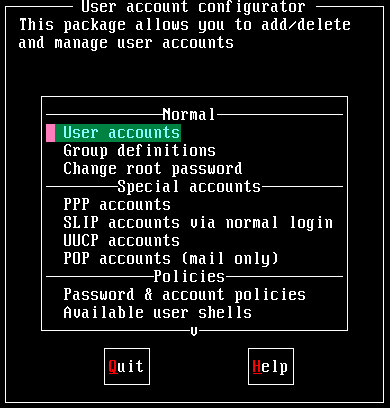
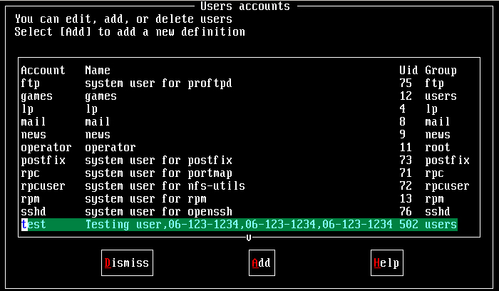
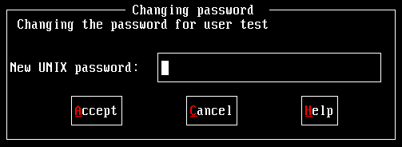
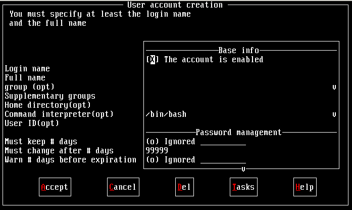

|
|
||||||||||||||
since2012/04/23 |
 |
|
||||||||||||
 |
|
|
|
|
||||||||||
|
|
|
|
|
|||||||||||
|
|
|
|
||||||||||||
|
|
|
|
|
|
|
|
|
|
|
|
|
|
|
|
密码管理与设定：passwd,
使用者身份切换：su, sudo, visudo,
使用者查询： id, finger, groups,
手动增加使用者： 一般使用者账号, 仅开放 POP (邮件)账号
本章习题练习
账号管理：
管理员的工作中，相当重要的一环就是『管理账号』啦！因为整个系统都是你在管理的，并且所有的一般用户的申请，都必须要透过你的协助才行！所以你就必须要了解一下如何管理好一个网站的账号管理啦！在管理 Linux 主机的账号时，我们必须先来了解一下 Linux 到底是如何辨别每一个使用者的！
- 使用者的 ID 与群组的 ID ：
其实 Linux 并不会直接认识你的『账号名称』，他认识的其实是你的『账号 ID 』才是！如果你曾经以 tarball 安装过软件的话，那么应该不难发现，在解压缩之后的档案，嘿?档案拥有者竟然是『不明的数字』？奇怪吧？这没什么好奇怪的，因为 Linux 说实在话，他真的只认识代表你身份的号码而已！而对应的号码与账号，则是记录在 /etc/passwd 当中！大致上的情况就像这样，所以呢，当你要登入你的 Linux 主机的时候，那个 /etc/passwd 与 /etc/shadow 就必须要让系统读取啦，（这也是很多攻击者会将特殊账号写到 /etc/passwd 里头去的缘故！）所以呢，如果你要备份 Linux 的系统的账号的话，那么这两个档案就一定需要备份才行呦！
- 怎样登入 Linux 主机呀？
好了，那么我们再来谈一谈，到底我们是怎样登入 Linux 主机的呢？其实也不难啦！当我们在主机前面或者是以 telnet 或者 ssh 登入主机时，系统会出现一个 login 的画面让你输入账号，这个时候当你输入账号与密码之后， Linux 会：
- 先找寻 /etc/passwd 里面是否有这个账号？如果没有则跳出，如果有的话则将该账号对应的 UID ( User ID )与 GID ( Group ID )读出来，另外，该账号的家目录与 shell 设定也一并读出；
- 再来则是核对密码表啦！这时 Linux 会进入 /etc/shadow 里面找出对应的账号与 UID，然后核对一下你刚刚输入的密码与里头的密码是否相符？
- 如果一切都 OK 的话，就进入 Shell 控管的阶段啰！
- 认识 UID、GID、SUID与SGID：
还记得我们在『文件系统与文件属性』那一篇文章的时候有提到每一个档案都具有『拥有人与拥有群组』的属性吗？那么档案如何判别他的拥有者与群组呢？其实就是利用 UID 与 GID 啦！每一个档案都会有所谓的拥有者 ID 与拥有群组 ID ，亦即是 UID 与 GID ，然后系统会依据 /etc/passwd 的内容，去将该档案的拥有者与组名，使用账号的形式来秀出来！我们可以作个小实验，你可以以 root 的身份 vi /etc/passwd ，然后将你的一般身份的使用者的 ID 随便改一个号码，然后再到你的一般身份的目录下看看原先该账号拥有的档案，你会发现该档案的拥有人变成了『数字了』呵呵！这样可以理解了吗？
[root @test /root]# vi /etc/passwd
root:x:0:0:root:/root:/bin/bash
bin:x:1:1:bin:/bin:/sbin/nologin
daemon:x:2:2:daemon:/sbin:/sbin/nologin
adm:x:3:4:adm:/var/adm:/sbin/nologin
test:x:500:500:test user:/home/test:/bin/bash <==将 500 改成 510
[root @test /root]# cd /home/test
[root @test test]# ll
-rw-rw-r-- 1 500 test 12542 Apr 12 11:22 test
看上面，拥有这变成了数字了～了解了之后，请赶快回到 /etc/passwd 里面，将数字改回来喔！
- 认识 /etc/passwd 档案与 /etc/shadow 档案：
由上面的说明您大概已经知道，嘿嘿！账号管理最重要的两个档案就是『 /etc/passwd 与 /etc/shadow 』了！这两个档案可以说是 Linux 里头最重要的档案之一了！如果没有这两个档案的话，呵呵！您可是无法登入 Linux 的呦！
- passwd 的构造：
这个档案的构造是这样的：每一行都代表一个账号，有几行就代表有几个账号在你的系统中！不过需要特别留意的是，里头很多账号本来就是系统中必须要的（例如 bin, daemon, adm, nobody 等等），请不要随意的杀掉他??；
root:x:0:0:root:/root:/bin/bash
bin:x:1:1:bin:/bin:/sbin/nologin
daemon:x:2:2:daemon:/sbin:/sbin/nologin
adm:x:3:4:adm:/var/adm:/sbin/nologin上面是 Mandrake 9.0 预设的几个账号，这些账号是系统在使用的呦！我们先来看一下 root 这个系统管理员这一行好了，你可以明显的看出来，每一行使用『:』分隔开，共有七个咚咚，分别是
- 账号名称：就是账号名称啦！对应 UID 用的！例如 root 就是默认的系统管理员的账号名称；
- 密码：早期的 Unix 系统的密码是放在这个档案中的，不过由于这样一来很容易造成数据的被窃取，所以后来就将数据给他改放到 /etc/shadow 中了，这一部份等一下再说，而这里你会看到一个 x ，呵呵！别担心密码已经被移动到 shadow 这个加密过后的档案啰；
- UID：这个就是使用者标识符（ID）啰！通常 Linux 对于 UID 有几个限制需要说给您了解一下：
上面这样说明可以了解了吗？是的， UID 为 0 的时候，就是 root 呦！所以请特别留意一下你的 /etc/passwd 档案！
- 0 系统管理员，所以当你要作另一个系统管理员账号时，你可以将该账号的 UID 改成 0 即可；
- 1~500 保留给系统使用的ID，其实 1~65534 之间的账号并没有不同，也就是除了 0 之外，其他的 UID 并没有不一样，预设 500 以下给系统作为保留账号只是一个习惯。这样的好处是，以 named 为例，这个程序的默认所有人 named 的账号 UID 是 25 ，当有其他的账号同样是 25 时，很可能会造成系统的一些小问题！为了杜绝这样的问题，建议保留 500 以前的 UID 给系统吧！
- 500~65535 给一般使用者用的！
- GID：这个与 /etc/group 有关！其实 /etc/group 的观念与 /etc/passwd 差不多，只是他是用来规范 group 的而已！
- 说明：这个字段基本上并没有什么用途，只是用来解释这个账号的意义而已！ 不过，如果您提供使用 finger 的功能时，这个字段可以提供很多的讯息呢！底下的 chfn 可以解释一下啰！
- 家目录：这是用户的家目录，以上面为例， root 的家目录在 /root ，所以当 root 登入之后，马上在的所在就是 /root 里头啦！呵呵！如果你有个账号的使用空间特别的大，你想要将该账号的家目录移动到其他的硬盘去，没有错！可以在这里进行修改呦！默认的用户家目录在 /home/yourIDname
- Shell ：所谓的 shell 是用来沟通人类下达的指令与硬件之间真正动作的界面！我们通常使用 /bin/bash 这个 shell 来进行指令的下达！关于 shell 的用法我们会在后面再提及的！这里比较需要注意的是，有一个 shell 可以用来替代成让账号无法登入的指令！那就是 /bin/false 这个东西！这也可以用来制作纯 pop 邮件账号者的数据呢！
- shadow 的构造：
由于 /etc/passwd 并不安全，所以后来发展出将密码移动到 /etc/shadow 这个档案中分隔开来的技术！并且加入了很多的限制参数在 /etc/shadow 里头！我们来了解一下这个档案的构造吧！
root:$K.K2.hqu.QfV.dkjjteojiasdlkjeo:11661:0:99999:7:::
bin:*:11661:0:99999:7:::
daemon:*:11661:0:99999:7:::
adm:*:11661:0:99999:7:::这是 shadow 的形式，也同样的以『:』作为分隔的符号。数一数，共可以发现有九个字段，分别给他说明如下：
- 账号名称：这个跟 passwd 需要对应！也就是跟 passwd 相同的意思啦！
- 密码：这个才是真正的密码，而且是经过编码过的密码啦！你只会看到有一些特殊符号的字母就是了！需要特别留意的是，虽然这些加密过的密码很难被解出来，但是『很难』不等于『不会』，所以，这个档案的默认属性是『-rw-------』亦即只有 root 才可以读写就是了！你得随时注意，不要不小心更动了这个档案的属性呢！另外，如果是在密码栏的第一个字符为『 * 』表示这个账号并不会被用来登入的意思。所以万一哪一天你的某个使用者不乖时，可以先在这个档案中，将他的密码多加一个 * ！嘿嘿！他就无法使用该账号啰！直到他变乖了，再给他启用啊！
注意事项：密码忘记或者被更动了？ 有的时候会发生这样的情况，就是说，你的 root 密码忘记了！要怎么办？重新安装吗？另外，有的时候是被入侵了， root 的密码被更动过，该如何是好？
这个时候就必须要使用到 /etc/shadow 这个数据了！我们刚刚知道密码是存在这个档案中的，所以只要你能够以软盘开机，进入『单人维护系统』，那么就可以不用输入密码来以 root 的身份登入（通常就是在 boot: 时输入 linux single 就是了！）然后进入 /etc/shadow 这个档案中，将 root 的密码这一栏全部清空！然后再登入 Linux 一次，这个时候 root 将不需要密码（有的时候需要输入空格符）就可以登入了！这个时候请赶快以 passwd 设定 root 密码即可！
- 上次更动密码的日期：这个字段记录了『更动密码的那一天』的日期，不过，很奇怪呀！在我的例子中怎么会是 11979 呢？呵呵，这个是因为计算 Linux 日期的时间是以 1970 年 1 月 1 日作为 1 ，而 1971 年 1 月 1 日则为 366 啦！所以这个日期是累加的呢！得注意一下这个资料呦！那么最近的 2002 年 1 月 1 日就是 11689 啦，了解了吗？
- 密码不可被更动的天数：第四个字段记录了这个账号的密码需要经过几天才可以被变更！如果是 0 的话，表示密码随时可以更动的意思。这的限制是为了怕密码被某些人一改再改而设计的！如果设定为 20 天的话，那么当你设定了密码之后， 20 天之内都无法改变这个密码呦！
- 密码需要重新变更的天数：由于害怕密码被某些『有心人士』窃取而危害到整个系统的安全，所以有了这个字段的设计。你必须要在这个时间之内重新设定你的密码，否则这个账号将会暂时失效。而如果像上面的 99999 的话，那就表示，呵呵，密码不需要重新输入啦！不过，如果是为了安全性，最好可以设定一段时间之后，严格要求用户变更密码呢！
- 密码需要变更期限前的警告期限：当账号的密码失效期限快要到的时候，系统会依据这个字段的设定，发出『警告』言论给这个账号，提醒他『再过 n 天你的密码就要失效了，请尽快重新设定你的密码呦！』，如上面的例子，则是密码到期之前的 7 天之内，系统会警告该用户。
- 账号失效期限：如果用户过了警告期限没有重新输入密码，使得密码失效了，而该用户在这个字段限定的时间内又没有跟 root 反应，让账号重新启用，那么这个账号将暂时的失效！
- 账号取消日期：这个日期跟第三个字段一样，都是使用 1970 年以来的日期设定。这个字段表示：这个账号在此字段规定的日期之后，将无法再使用。这个字段会被使用通常应该是在『收费服务』的系统中，你可以规定一个日期让该账号不能再使用啦！
- 保留：最后一个字段是保留的，看以后有没有新功能加入。
- 这个 /etc/shadow 是很重要的数据，千万不能遗失也不能被 root
以外的人看到或修改！尤其是密码栏，因为很早之前就已经发明了『暴力计算』密码的程序，如果你的密码被看过了，则别人可以利用该程序去演算出你的真实密
码，呵呵，到时候可就伤脑筋了！切记切记！那么什么是
SUID 与 SGID 呢？前面有说过了！跟文件属性比较有相关， 点这里
去看看吧！
- 认识 /etc/group 与 /etc/gshadow 档案：
认识账号与密码是使用 /etc/passwd 与 /etc/shadow ，那么认识 group 就是 /etc/group 与 /etc/gshadow 啰！OK！我们也来看看这两个档案的构造吧！
- 认识 /etc/group
这个档案可以让你直接将账号所要支持的群组加进来！例如你有一个账号名称为 myaccount ，你想要让这个账号可以支持 root 这个群组，则你可以直接在 /etc/group 里面加入呢！很方便，不需要动用的指令呦！
root:x:0:root
bin:x:1:root,bin,daemon
daemon:x:2:root,bin,daemon
sys:x:3:root,bin,adm
adm:x:4:root,adm,daemon这个内容也说明如下：
- 组名：就是组名啦！
- 群组密码：通常不需要设定，因为我们很少使用到群组登入！不过，同样的，密码也是被纪录在 /etc/gshadow 当中啰！
- 群组 ID：就是所谓的 GID 啦！
- 支持的账号名称：这个群组里面的所有的账号，如上面所言，如果你想要让 mysccount 也属于 root 这个群组的话，那么就将上面的第一行最后面加上 ,myaccount （不要有空格）使成为『root:x:0:root,myaccount』就可以啦。
- /etc/gshadow 的构造：
root:::root
bin:::root,bin,daemon
daemon:::root,bin,daemon
sys:::root,bin,adm
adm:::root,adm,daemon一般来说，group password 是用来让那些不在 group 中的成员，临时加入 group 用的，有兴趣的话可以使用 man newgrp 了解一下他的用法！不过，因为牵涉到 "密码"，不好管理，因此很少用。真想让对方加入，不如将对方加入该群组，用密码反而不方便。
- 增加使用者的一般步骤：
新增使用者的时候，如果该使用者所属的群组不存在，则得(1)先新增群组；然后(2)再新增使用者账号。当然，如果要删除群组时，则必须要反过来，先删除使用者才能删除群组！这点请大家留意啰！
认识完了一些需要注意的东西之后，我们来研究一下如何以『指令』增加群组、用户与变更密码吧！在接下来的例子中，『您可以依照底下的案例直接下达指令去试看看！』实作是真的很重要的啦！
- groupadd
语法：说明：
[root @test /root ]# groupadd [-g GID] groupname
参数说明：
-g GID ：自行设定 GID 的大小
范例：
[root @test /root]# groupadd -g 55 testing<==设定一个群组，GID为 55
这个指令会增加群组呢！而作用到的档案只有『/etc/group 与 /etc/gshadow』这两个档案，说实在的，你也可以直接修改这两个档案就好了，根本不需要使用到这个指令的！使用 vi 修改上面两个档案还比较简单呢！另外，如果你要新增的使用者所要的群组并不存在于系统中，那么您在增加使用者账号之前，就必须要先新增群组啰！
- groupdel
语法：说明：
[root @test /root ]# groupdel groupname
参数说明：
范例：
[root @test /root]# groupdel testing
这很简单的，就是将 group ID 给他杀掉去！不过，有一点必须要特别留意，就是『在杀掉群组之前，请先将该群组的 primary 使用者删除！』才好！那什么是 Primary 的使用者呢？说穿了也很简单啦！就是 /etc/passwd 里面，那个 GID 设定为这个群组的 GID 的那个使用者就对啦！
- useradd
语法：说明：
[root @test /root ]# useradd [-u UID] [-g GID] [-d HOME] [-mM] [-s shell] username
参数说明：
-u ：直接给予一个 UID
-g ：直接给予一个 GID （此 GID 必须已经存在于 /etc/group 当中）
-d ：直接将他的家目录指向已经存在的目录（系统不会再建立）
-M ：不建立家目录
-s ：定义其使用的 shell
范例：
[root @test /root]# useradd testing <==直接以默认的数据建立一个名为 testing 的账号
[root @test /root]# useradd -u 720 -g 100 -M -s /bin/bash testing <==以自己的设定建立账号
这个指令能够变更的档案可多了！包括了底下的各个档案：
- /etc/passwd
- /etc/shadow
- /etc/group
- /etc/gshadow
- /etc/skel
- /etc/default/useradd
- /etc/login.defs
建立预设的账号：
建立账号的时候，如果没有特殊的设定，通常我们只使用『 useradd username 』就可以建立一个名为 username 的账号了！不过你知道预设的账号的基本设定吗？嘿嘿嘿嘿！基本设定就在 /etc/login.defs 与 /etc/default/useradd 这两个档案中！在 login.defs 里头有点像底下这样：几乎可以设定的都在这里设定了！所以需要了解一下这个档案！另外，如果你是专门开启 mail server 的，那么由于使用者账号不需要登入主机，所以也就不需要给予家目录，这个时候最后一项 GREATE_HOME 或者可以设定为 no ！此外，当你以默认的数据建立账号时，该账号的 UID 将会取目前在 /etc/passwd 当中『最大的（其实是小于 60000）』那一个 UID + 1 即是预设帐号的 UID 啰！
MAIL_DIR /var/spool/mail <==邮件默认目录摆放处
PASS_MAX_DAYS 99999 <==密码需要变更的时间
PASS_MIN_DAYS 0 <==密码多久需要变更
PASS_MIN_LEN 5 <==密码的最小长度（这个可以改大一些吧！）
PASS_WARN_AGE 7 <==密码快要失效之前几天发警告讯息？
UID_MIN 500 <==预设帐号最小起算的 UID 数目（最小为 500 ）
UID_MAX 60000 <==最大的 UID 限制
GID_MIN 500 <==GID 限制
GID_MAX 60000 <==GID 限制
CREATE_HOME yes <==是否建立家目录，默认是要建立家目录（若为 mail server 可以取消此项目）而至于 useradd 内容则为：
在这个项目中，最需要了解的就是 SKEL 啦！当你建立一个名为 testing 的账号时，默认的家目录会是『 /home/testing 』这个目录，而这个目录的内容就是由 /etc/skel 所 copy 过去的！所以『当你想要让用户的默认家目录内容更动时，可以直接将要更动的数据写在 /etc/skel 当中！』
GROUP=100 <==预设的使用者群组为 100 ，查看一下 /etc/group 时，这个组名为 users 呢！
HOME=/home <==默认用户的家目录建立的目录
INACTIVE=-1 <==是否不启动，设定为 -1 自然就是启动啦！
EXPIRE= <==是否需要设定『死亡』时间？如果你希望该用户在期限到之后就不许登入，此项可以设定天数。
SHELL=/bin/bash <==预设的 Shell 为何？
SKEL=/etc/skel <==用户家目录的内容！
- 以自己的条件建立账号：
如果要以自己的条件建立账号的时候，一般我都是喜欢手动的增加啦！不然就是先以上面的那一个例子增加一个账号之后，在去手动修改 /etc/passwd 等等的档案！
userdel
语法：说明：
[root @test /root ]# userdel [-r] username
参数说明：
-r ：将该账号的[home directory]与[/var/spool/mail/username]一并删除！
范例：
[root @test /root]# userdel testing <==只有砍掉 /etc/passwd 与 /etc/shadow 的该账号内容；
[root @test /root]# userdel -r testing<==连该账号的 /home/testing 与 /var/spool/mail/testing 都砍掉！
这个指令下达的时候要小心了！通常我们要移除一个账号的时候，你可以手动的将 /etc/passwd 与 /etc/shadow 里头的该账号取消即可！一般而言，如果该账号只是『暂时不启用』的话，那么将 /etc/shadow 里头最后倒数一个字段设定为 0 就可以让该账号无法使用，但是所有跟该账号相关的数据都会留下来！使用 userdel 的时机通常是『你真的确定不要让该用户在主机上面使用任何数据了！』
chsh
语法：说明：
[root @test /root ]# chsh [-l] [-s shellname]
参数说明：
-l ：列出目前这部机器上面的能用的 shell 名称
-s ：改变目前的 shell 成为 shellname
范例：
[test @test /root]# chsh -l <==列出本机上所有能用的 shell 名称
/bin/sh
/bin/bash
/bin/ash
/bin/bsh
/bin/csh
[test @test /root]# chsh -s /bin/csh <==test 这个用户自行改变自己的默认 shell
这是用来改变用户自己的 shell 的指令！要注意呦，由于这个档案能够改变 /etc/passwd 的内容，所以他的默认属性就有 SUID 的属性了！通常 VBird 也都不会使用这个指令，因为直接改 /etc/passwd 就可以啦！
chfn
语法：说明：
[root @test /root ]# chfn
参数说明：
范例：
[test@test test]$ chfn
Changing finger information for test.
Password: <==这里输入新的密码
Name [Testing]: Testing <==这里输入你要显示的『昵称』
Office []:
Office Phone []:
Home Phone []:
Finger information changed.
这个指令说实在的，除非是你的主机有很多的用户，否则倒真是用不着这个程序！这就有点像是 bbs 里头更改你『个人属性』的那一个资料啦！这个程序主要都是搭配 finger 这支程序在运作的！不过，由于 finger 这支程序不是很安全，所以预设是没有安装他的！如果您想要玩一下 finger 的话，那么请先参考 RPM 套件安装内容后，在安装 finger 的 RPM 档案，然后再来玩吧！底下这里鸟哥还是先简单的介绍一下就好了！
使用 chfn 这个指令之后，程序会要求您输入许多的信息，包含了：密码这几个咚咚给他设定好之后，你的 /etc/passwd 会变成怎样呢？我们以管线命令，配合正规表示法，捉出 test 这个人的信息如下：
昵称
办公室号码
办公室电话
家里电话嘿嘿！多出了一些逗点分隔在第三栏啰！那个就是 chfn 改的信息啰！只有改这个地方就是了！所以你也可以自行修改呢！那么再来你可以使用 finger test 来看一下 test 这个人的基本信息！
[root @test root]# more /etc/passwd | grep test
test:x:501:501:Testing user,06-123-1234,06-123-1234,06-123-1234:/home/test:/bin/bash
userconf
不论怎么说，以 useradd 与 groupadd 这两个指令来增加群组与账号总是不太方便！那么有没有比较类图形界面的方式可以来新增使用者呢？哈哈！当然有，在 Mandrake 与 Red Hat 当中那就是使用 userconf 就可以啦！假设您已经安装了 Linuxconf 这个套件，所以自然也就含有 userconf 这个咚咚！因此，直接以 root 的身份在指令列模式输入 userconf 就会出现下图：

在这个画面中，目前我们所要使用到的功能只有：当然，其实我们关心的只有 User accounts 这一项啰！在操作上，使用『上下键』移动反白的线条，而使用『Tab』键来使光标移动到底下的 Quit 及 Help 按钮！底下我们提一提在账号管理方面，最常使用的两个功能，分别是『已存在账号的修正与管理』，及『新增账号！』
- User accounts
- Group definitions
- Change root password
- 察看已存在账号的内容、修正与管理：
在上图当中，以上下按键移动光标到 User accounts 部分上去，然后按下 Enter 吧！会显示如下的画面：

在上面这个画面当中，我们可以发现到每一个有用的账号都在上头，而他的主要信息也都列示在上头了！当然啦，这些信息『全部都在 /etc/passwd 里面！』没错！所以你只要知道 passwd 这个档案里面的代表意义，这里就很容易了解他的意思啦！好了，假设我要修改 test 这个已经存在的用户信息，那么就直接将光标移动到 test 上面，然后按下 Enter 键，会出现如下的图示：

您会发现到你的光标是在右边的 Base info 里面，你可以移动光标，并且去修改他呢！例如你要修改 group 的话，就直接移动到 users 上面去，修修改改即可！同样的， HOME( 家目录 )与 shell ( 就是 Command interpreter 那一栏 )的修改都是直接移动光标再来修订即可！这个应该不难啦！不过，如果要修改密码呢？那么你就必需使用 <Tab> 按键，移动到 Passwd 那个按钮上面，按下他之后，就可以设定密码了！

修改完毕之后，会回到账号图示的画面，这个时候您可以继续的观察其他的账号呢！
- 新增账号：
再来则是新增账号的部分！在账号图标画面中双击『Tab』 键将光标移动至 Add 这一项，按 Enter，会出现：

在这个画面中，你所需要输入的其实只有 Login name 就可以了，其他的东西系统会自动帮你设定（有 (opt) 的都是系统会自行依照 /etc/login.defs 与 /etc/defaults/useradd 的内容自行加以设定的！）。不过，如果你需要将使用者分门别类的话，最好还是设定一下比较好！咦！什么叫做分门别类？以我为例，我们单位的主机有分对自己 研究室的成员还有外面的朋友开放账号服务，由于对外的账号仅提供 mail 的服务，而自己的研究室成员则包含了所有主机上面可以进行的工作！为了防止未来不当的管理，对于两边的人员的身份管制( 最简单的方法就是以 UID 或 Group 来分辨 )就显的重要的多了！好了！那么什么东西在 userconf 这支程序里面需要特别了解一下的呢？
- Login name：输入要新增的使用者的账号（就是 ID 啦），尽量不要使用大写字符啦！；
- Full name ：这是这个账号的使用者全名，这个地方是可有可无的，不会影响！
- group ：用来指定这一个 ID 的所属群组，通常鸟哥都会将在我机器上的使用者分成几各类别，而分别给予不同的群组，好方便管控！
- Supplementary groups：除了主要的群组之外，Linux 还提供你其他的支持群组！不过通常不用设定就可以了。如果设定的话，修改的档案其实就是 /etc/group 啰；
- Home directory(opt) ：这是用来设定这个账号用户的家目录。通常如果不设定的话，默认的用户家目录都在 /home/userID ，但是当你的硬盘容量不够大的时候，或者想将某人移动到某一个目录的话，就可以直接在这边改一改啰！
- Command interpreter(opt) ：这是使用者预设的 Shell ，通常在 Linux 下，我们都使用 BASH ，所以不用改啦；
- User ID(opt) ：注意喔，这个 ID 可不是前面的 login 的 ID ，这个 ID 是前面说的 Uid 编号，你可以自己设定一个大于 500 且不与其他账号重复的 ID，也可以交由系统自动设定；
OK！设定完成之后，按下 『Tab』 键，选择 Accept 按 Enter，这时会出现要你输入密码的画面，就如同上图 13-1-4 。请输入这个账号所想要的密码。请注意，通常密码的限制是：
- 密码不能与账号相同；
- 密码尽量不要选用字典里面会出现的字符串；
- 密码需要超过 8 个字符；
这是主要的限制，不过，由于你是『权力无限大的管理员』，所以密码的形式是『不限的』（虽然没有照规矩来时，在设定中会出现一些错误讯息，不过并不会影响你的设定！）。输入完毕之后会出现在输入一次的画面，再次输入一次密码之后，那就新增完成了！
基本上， userconf 的功能是很多啦！但是，他也只是将我们的 /etc/passwd 这个档案进行图表显是的样子而已！并没有什么新奇的事物呢！所以啰，如果你已经很熟悉该档案了，那么根本使用 vi 也就可以啦！ Userconf 还用不上呢！
密码管理与设定：
再来跟大家提一提那个重要的密码概念！您得要特别留意的是，今天，您的主机若是遭到入侵，对方的第一个入侵点自然就是您主机上面账号的『密码』了，所以，如果您的密码定义的比较严格的话，那么自然对方就不容易猜到你的密码，自然就会比较有保障啦！
目前一些 Cracker 较常使用的密码破解软件，大抵是『字典攻击法』及所谓的『暴力攻击法』，就字面上的意义来说，『字典攻击法』是将字典里面所查的到的任何单字或词组都输入 的程序中，然后使用该程序一个一个的去尝试破解你的密码，不要觉得这样的速度似乎很慢，实际上，现今的计算机指令周期太高了，字典攻击法的操作效率基本上是 很高的！另一个『暴力攻击法』就是直接使用键盘上面任何可以使用的按键，然后依照组合，以 1 个, 2 个, 3 个…. 密码组合的方式去破解你的密码！这个方式就真的比较慢一点，如果你的密码组合是 6~8 个字符以上，那么暴力攻击法还是需要好长一段时间才能够破解的了的！
由上面的『字典攻击法』与『暴力攻击法』猜测你的密码的方式来说，您知道如何设定一个好的密码了吗？是的，您的密码最好需要底下几个特性：这种密码真的很不容易被破解，但是很不幸的，也很容易被你我忘记??所以呢，建议您常常使用一些对别人来说是没有意义，但是对您确有特殊涵意的字眼！例如我常常提到的，我爱我老婆！『 I&Mywife*^』之类的密码！不容易被猜，也挺容易被你自己记住的！那么有没有『很要命的密码』呢？有的，底下几种密码就很要命：
- 密码中含有数个特殊字符，例如 $#@^&* 及数字键等等：如同上面提到的，您的按键越奇怪，那么对方就越不容易使用既有的软件来破解！
- 英文字母大小写混合使用；
- 密码长度至少要到 6 ~ 8 个以上才好；
- 没有特殊意义的字母或数字组合，并且夹着很多的特殊字符！
VBird 曾经见过直接以账号做为密码的状况！真是要命??太好猜了?
- 常用的英文单字：例如 party, park, andyliu, linux, paper 等等，都不好！容易被字典攻击法破解！
- 身边人物的名字，例如配偶、小孩的名字等等， Tom, andy, eric 等等，都不好！
- 单纯的日期：例如您的生日啦！等等的，都不够好！
- 任何与您相关的数字或其他信息，例如身份证号、银行账号等；
好了！知道了密码的重要性，与基本的设定之后，接着下来我们谈一谈如何手动设定密码吧！基本上， root 可以设定『任何样式的密码』，而且， root 也可以帮助 user 订定他们的密码！至于 user 仅能修改自己的密码！那么修改密码使用什么命令？就是 passwd 这个命令啦！咦！这里突然给他想到几个重要信息，大家赶紧复习一下：
- 如何寻找 passwd 这个指令？
使用 which passwd 即可
- 如何察看 passwd 这个档案的属性？并请说明他的属性为何？
使用 ls –l `which passwd` 即可！他具有 SUID 的属性！
- 什么是 SUID ？
就是该程序在被执行的过程中，具有程序拥有者的权限！这些指令与意义如果都还没有忘记！恭喜您了！真是不错！好了，还记得我们密码放在哪里吗？对啦！就是 /etc/shadow 里面，那个档案的权限是 –rw------- 所以只有 root 可以修改，因此， passwd 必需要具有 SUID 才能让一般用户修改他们的密码啰！
- 我该如何查询 /etc/passwd 与 /usr/bin/passwd 的用法与架构？
分别使用 man passwd 及 man 5 passwd
passwd
语法：说明：
[root @test /root]# passwd [username]
[test @test /root]# passwd
[root @test /root]# passwd test
Changing password for user test
New password: <==输入密码
BAD PASSWORD: it is based on a dictionary word
Retype new password: <==再输入一次！
passwd: all authentication tokens updated successfully
这个指令可以修改用户的密码！要注意的是，这个指令在 /bin/passwd 中，而账号所存放的地方在 /etc/passwd 中，是不一样的呦！搞清楚呦！
- 一般使用者的用法是直接输入 passwd 即可；
- root 可以使用 passwd [username] 来替 username 这个账号取一个新的密码！
使用者身份切换：
这里有个很有趣的问题要来跟大家分享一下，还记得在古老的年代里面，还没有 ssh 的时候，我们都是使用 telnet 登入系统的，偏偏系统默认是不开启 root 以 telnet 登入，那么好了！我们要怎样远程操控我们的 Linux 主机呀！？因为由前面的介绍我们不难发现，系统当中最特殊的账号就是 UID 为 0 的使用者了，他具有至高无上的权力！而且是系统管理员必须要具备的身份，否则怎样操控主机呢？您说是吧！好了，那么 telnet 将 root 的登入权限关掉了，而如果我们在制作一个使用者，并将其 UID 变为 0 的话又如何？嘿嘿！很抱歉， telnet 就是认 UID 的，所以肯定还是进不了系统，这个时候要怎么办呀！？就是变换身份呀！将一般使用者的身份变成了 root 就行了！
但是怎样变换身份呀？怎么说呢？就是说，一般而言，我们都不希望以 root 的身份登入主机，以避免被怪客入侵了！但是一部主机又不可能完全不进行修补或者是设定等动作！这个时候要如何将一般使用者的身份变成 root 呢？主要有两种方式，分别是：
- 以 su 直接将身份变成 root 即可，但是这个指令却需要 root 的密码，也就是说，如果你要以 su 变成 root 的话，你的一般使用者就必须要有 root 的密码才行；
底下我们就来说一说 su 跟 sudo 的用法啦！
- 所以当有很多人同时管理一部主机的时候，那么 root 的密码不就很多人知道了？不是很好吧?所以，如果不想要将 root 的密码流出去呢？呵呵！可以使用 sudo 来进行工作呦！
su
语法：说明：
[root @test /root ]# su
参数说明：
范例：
[test@test test]$ su
Password: <==输入 root 的密码
[root@test test]# <==身份变成 root 了！
[test@test test]$ su - <==连环境参数档案都是读取 root 的！
[root@test root]# su test <==将 root 的身份改为 test ，且不需要输入密码喔！
这个指令很有用呦！这是用来将『一般身份转换成 super user 』的指令！通常为了安全的考虑， telnet 与 ssh 尽量不要以 root 的身份来登入！但是有时后我们又要在外头以 root 的身份来修改系统设定，这个时候 su 就很有用了！su 的使用真的很简单，输入 su 之后，直接给他输入 root 的密码，此时您就是 root 了！但是需要特别留意的是：
- 虽然您已经是 root 的身份，但是您的环境当中，还是属于当初登入的那个使用者！例如我以 test 登入 Linux ，再以 su 切换身份成为 root ，但是我的 mail, PATH 及其他一些相关的环境变量，都还是 test 这个身份呢！
- 至于环境变量当中，最麻烦的当属 PATH 这个东西，因为为了避免一般使用者使用了 root 的管理指令，所以通常 Linux 都会将指令分类放在两个主要的目录，分别是 /bin 与 /sbin ！那个 /sbin 大多是 super user 就是 root 用来管理系统的指令啦！所以，可能的话，将 test 的 PATH 重新设定成为 root 的 PATH ，这样也比较方便呀！
此外， su 也可以将您的身份转换成为其他身份的使用者，而，如果您是 root ，那么转换为其他身份的使用者，将不需要输入密码喔！很过瘾吧！例如上面的最后一个例子！
- 如果要全部的环境变量均使用 root 的配置文件，这个时候必需使用『 su - 』来下达命令喔！
sudo
语法：说明：
[root @test /root ]# sudo [-u username] [command]
参数说明：
-u ：将身份变成 username 的身份
范例：
[test@test test]$ sudo mkdir /root/testing
Password: <==输入 test 自己的密码
[root@test test]$ sudo -u test touch test <==root 可以执行 test 这个用户的指令，建立 test 的档案！
- 如果单纯的使用 su 来变换成 root 的身份，最大的好处是可以直接下达我们惯用的指令，但是，还是会有问题的，就是如果主机是由多人共管的时候，由于所有的人都必须要知道 root 的密码，如此一来，呵呵！很麻烦的啦！因为怕被入侵嘛！而且只要 root 改变了密码，那么所有人都必需要通知一次！很麻烦，加上，如果管理群中的一个人不小心泄出了 root 的密码，不就完蛋了??那么有没有可以不需要 root 的密码，却还是可以执行 root 的工具呢？呵呵！这个时候就有 sudo 的出现了！
- sudo 的基本语法就是在 sudo 后头直接加上指令，例如上面的例子中， mkdir /root/testing 就是命令啦！那么就可以来执行 root 身份可以动作的事情！此外，由于执行 root 身份的工作时，『输入的密码是用户的密码，而不是 root 的密码，所以可以减少 root 密码外流的问题！』如此 root 的密码将不会流出去了！但是 sudo 在使用的时候请小心，就是要在 /etc/sudoers 里头设定该有的事项！在预设情况下，只有 root 才能使用 sudo ！那有什么用！我们是一般使用者，想要使用的是 sudo 来变成 root 的身份呀！呵呵！没关系！可以使用 visudo 来编辑 /etc/sudoers 这个档案即可！在 Mandrake 9.0 与 Red Hat 的 Linux 版本之的预设情况中，使用『 visudo 』才能编辑 /etc/sudoers 这个档案，此外，编辑者的身份必须要 root 才行！如何编辑呢？在预设的情况中，我们会希望将可以执行 root 动作的人的 group 设定为 wheel ，然后：
如果如同上面的方式，将黄色字体那一行 /etc/sudoers 里头将
『 # %wheel ALL=(ALL) ALL』
这一行的批注符号取消，如此一来，则群组为 wheel 的人就可以进行 root 的身份工作！这个 wheel 是系统默认的 group 呢！因此，如果您想要让这部主机里头的一般身份使用者具有 sudo 的权限，那么您就必需将该 user 放入支持 wheel 这个群组里头！如何加入？呵呵！刚刚上面不是介绍了 /etc/group 吗？赶紧去看看！那么万一我想要让『单独的个人可以使用 sudo 的功能』呢？呵呵！那就直接以 visudo 加上这一行
『test ALL=(ALL) ALL』
即可！那么 test 即可使用 sudo 的功能啰！很简单吧！但是请记得不要以 vi 直接修改 sudoers 呦！会有问题！
- sudo 除了变成 root 的功能之外！嘿嘿！他还可以变成『任何人』的功能呦！举个简单的例子来说好了，我们都知道启动程序的时候最好不要使用 root 来启动，因为如此一来当该程序被接管时，接管者（或者说是入侵者）将拥有 root 的权限了！所以近来我们都希望不要以 root 来启动一些程序啦！会比较安全！那么我们要以 root 来启动成为 test （例如常用的 nobody 这个账号）要如何作？很简单，就使用上面的第二个例子来看：
sudo -u test touch test
root 可以改变身份成为 test 来建立档案！嘿嘿！还不需要输入密码！很棒吧！这个动作我曾经在 squid 这个执行程序上面做过，这样一来，即使我的 squid 被利用了，那么该怪客只能拥有 nobody 的权限，嘿嘿！该权限是很小很小的！所以可以达到保护主机的部分功能呦！
使用者查询：
好了，知道了 UID，GID 以及与账号有关的一些信息之后，我们要来瞧瞧，那么如何知道哪一个使用者的 UID 与 GID ，以及他们所能够提供的支持的群组呢？可能的话，当然可以直接到 /etc/passwd 及 /etc/group 里面去查看啰！但是还有更简单的方法呢，那就是使用简单的指令工具呀！有哪些简便的工具呢？就是底下这几个：
- id 查询使用者的 UID, GID 及所拥有的群组；
- groups 查询使用者能够支持的群组；
- finger 查询用户的一些相关讯息，例如电话号码等。
- id
语法：说明：
[root @test root]# id [username]
范例：
[root @test root]# id
uid=0(root) gid=0(root) groups=0(root)
[root @test root]# id test
uid=501(test) gid=501(test) groups=501(test)
直接输入 id 就可以知道目前这个账号的 UID, GID 与所属的群组！当然啰，如果想要知道某个用户的相关信息，就直接使用 id username ，例如 id test 就可以知道 test 这个用户的相关信息啰！很方便吧！不需要去查看 /etc/passwd 及 /etc/group ！
- finger
语法：说明：
[root @test root]# finger [-s] username
参数说明：
-s ：长的列出
范例：
[root @test root]# finger test
Login: test Name: Testing user
Directory: /home/test Shell: /bin/bash
Office: 06-123-1234, 06-123-1234 Home Phone: 06-123-1234
Never logged in.
No mail.
No Plan.[root @test root]# finger –s test
Login Name Tty Idle Login Time Office Office Phone
test Testing user * * No logins 06-123-123 06-123-1234
finger 的用法也是真的很简单，就是直接给他 finger username 就可以知道任何一个人的相关信息了！而这个相关的讯息基本上都是写在 /etc/passwd 里面，当然，里面还搜寻了 /var/spool/mail 这个邮件放置的地点，所以还会显示出是否有邮件的讯息呢！相当的方便吧！不过，这个 finger 通常必需要配合 chfn 这个指令，亦即是 13-1-6 的内容提到的那个指令，才能够显示出比较多的信息呢！另外，其实 finger 不是个很安全的指令，因此， Mandrake 系统默认是不安装这个套件的！如果您想要试试看 finger 的话，那么请依照第二篇教导的内容，将 Mandrake 安装光盘第二块放入 CDROM 当中，然后 mount cdrom 之后呢，再以『 rpm –ivh finger* 』来安装 finger 吧！至于 rpm 的用法，我们会在第十八章的时候在进行说明呦！
- groups
直接输入 groups 就可以显示出目前的用户的所属群组了！包含了 Primary 与其他相关的群组都会被显示出来呢！
手动增加使用者：
好了，那么我们已经知道如何新增账号与删除甚至是修改账号了，呵呵！是否从此之后，天下太平呢？当然不是了！为什么呢？假设您今天要新增账号的内容是『数字账号』的话，那么是否可以使用 useradd 新增账号呢？例如：useradd 1234567很抱歉?useradd 并不允许这样的账号设定的！唉?真难过，难道没有其他的方法可以新增这样的使用者账号了吗？咦！刚刚不是说过，其实我们都是使用 /etc/passwd 及 /etc/shadow 这几个档案来设定账号的吗？那么使用手动的方式是否就可以解决这样的困扰了！Bingo ！没错！就是这样！所以底下我们尝试使用手动的方式来新增账号，试试看能不能成功的增加一个使用者 1234 呢？
- 一般使用者账号的增加：
好了，现在我们知道其实使用 userconf 、 useradd 与 groupadd 其实会用到的档案最鲜明的就是 /etc/passwd 与 /etc/shadow 啰！那么如何手动的增加一个使用者呢？最大的困扰在于 passwd 与 shadow 的同步啦！OK！大致的步骤可以这样说：
- 先建立所需要的群组（ vi /etc/group ）
- 建立账号的各个属性（ vi /etc/passwd ）
- 将 passwd 与 shadow 同步化 （ pwconv ）
- 建立该账号的密码 （ passwd acount ）
- 建立用户家目录 （ cp -r /etc/skel /home/account ）
- 更改家目录属性 （ chown -R account.group /home/account ）
- 这样就 OK 啦！实地的来新增一个 test 群组与账号来试试看：
| 建立新的群组
test ，设其 GID 为 520
[root @test /root ]# vi /etc/group ----略 test:x:520:test <==新增群组，且群组的人为 test ，GID 为 520 建立 test 的各个属性
同步化 /etc/passwd
与 /etc/shadow
建立密码
建立家目录并转化家目录的拥有者
|
这样就建立完毕啰！！很简单吧！而由上面的例子，其实您也可以依据此而使用 scripts 来新增使用者，详细的步骤等以后 VBird 真的开发出来了，再来跟大家报告。（如果没记错的话，目前很多网页都已经有提供相关的大量建立账号的方式了！）
- POP3 邮件账号的增加：
好啦！如果我是一个邮件主机，我不要用户使用 ftp, telnet, ssh 的话，只允许对方使用 POP3 而已，该怎么办？呵呵！其实也是很简单的，除了 userconf 可以进行之外，你也可以手动达到此一目的呦！
- 基本上的原理是这样的：
- 由于不需要让这个账号由其他的服务登入主机，所以在 shell 的地方则改成了 /bin/false 啰！
- 由于不需要这个账号的登入，所以家目录也可以不用建立！！
- 所以整个建立的步骤就可以简化为：
- 建立账号的各个属性（ vi /etc/passwd ）
- 将 passwd 与 shadow 同步化 （ pwconv ）
- 建立该账号的密码 （ passwd acount ）
- 这样就可以啦！我们实地的来建立一个名为 poptest
的账号试试看：
| 建立账号 poptest
[root @test /root ]# vi /etc/passwd ---略 poptest:x:530:45:testing pop account:/home/poptest:/bin/false<==家目录先设定也没关系！ 注意：群组必需要先存在，通常不知道什么 group 好的时候，可以直接使用 100 这个预设的 group 来替代！而 shell 则需要为 /bin/false 才行！ 同步化 passwd
与 shadow
建立密码
|
- 那么如何砍到刚刚建立的账号呢？很简单的啦！
- 就是将 /etc/passwd 与 /etc/shadow 里面的相关信息都杀掉，
- 然后再到 /home 底下去将该 account 的家目录整个杀掉就是了！
- 此外，你也需要到 /var/spool/mail 底下去杀掉该账号的邮件呦！
#!/bin/bash
accountfile="user.passwd"
read -p "Input title name: " filename
read -p "How much accounts: " number
[ -f "$accountfile" ] && mv $accountfile "$accountfile"`date +%Y%m%d`
# 1. create the account and password file
for ((i=1; i<=$number; i++ ))
do
account="$filename""$i"
echo "$account":"$account""xx" | tee -a "$accountfile"
done
# 2. create the account from useradd
cat "$accountfile" | cut -d':' -f1 | xargs -n 1 useradd -m
chpasswd < "$accountfile"
pwconv
pwck
|
本章习题练习 ( 要看答案请将鼠标移动到『答：』底下的空白处，按下左键圈选空白处即可察看 )
- root 的 UID 与 GID 是多少？而基于这个理由，我要让 test 这个账号具有 root 的权限，应该怎么作？
- 假设我是一个系统管理员，我有一个用户最近不乖，所以我想暂时将他的账号停掉，让他近期无法进行任何动作，等到未来他乖一点之后，我再将他的账号启用，请问：我可以怎么作比较好？？
- 将 /etc/passwd 的 shell 字段写成 /sbin/nologin ，即可让该账号暂时无法登入主机；
- 将 /etc/shadow 内的密码字段，增加一个 * 号在最前面，这样该账号亦无法登入！
- 将 /etc/shadow 的第八个字段关于账号取消日期的那个，设定小于目前日期的数字，那么他就无法登入系统了！
- 在设定密码的时候，是否可以随便设定呢？
- 我在使用 useradd 的时候，新增的账号里面的 UID, GID 还有其他相关的密码控制，都是在哪几个档案里面设定的？
- 我希望我在设定每个账号的时候( 使用 useradd )，预设情况中，他们的家目录就含有一个名称为 www 的子目录，我应该怎么作比较好？
- pwconv 这个指令有什么功能呢？
答：
- root 的 UID 与 GID 均为 0 ，所以要让 test 变成
root 的权限，那么就将 /etc/passwd 里面， test 的 UID 与 GID 字段变成 0
即可！
答：
- 由于这个账号是暂时失效的，所以不能使用 userdel
来删除，否则很麻烦！那么应该如何设定呢？再回去瞧一瞧 /etc/shadow 的架构，可以知道有这几个可使用的方法：
答：
- 最好不要随便设定密码！最好可以仔细的参考一下
13-2 节提到的内容！
答：
- 在 /etc/login.defs 还有 /etc/defaults/useradd
里面规定好的！
答：
- 由于使用 useradd 的时候，会自动以 /etc/skel 做为默认的家目录，所以，我可以在
/etc/skel 里面新增加一个名称为 www 的目录即可！
答：
- pwconf 可以让 passwd 里面的账号，设定一份密码到
/etc/shadow 当中！
2002/05/15：第一次完成
2003/02/10：重新编排与加入 FAQ
2005/08/25：加入一个大量建置账号的实例，简单说明一下而已！
本网页主要以Firefox配合解析度 1024x768 作为设计依据 鸟哥自由软件整合应用研究室